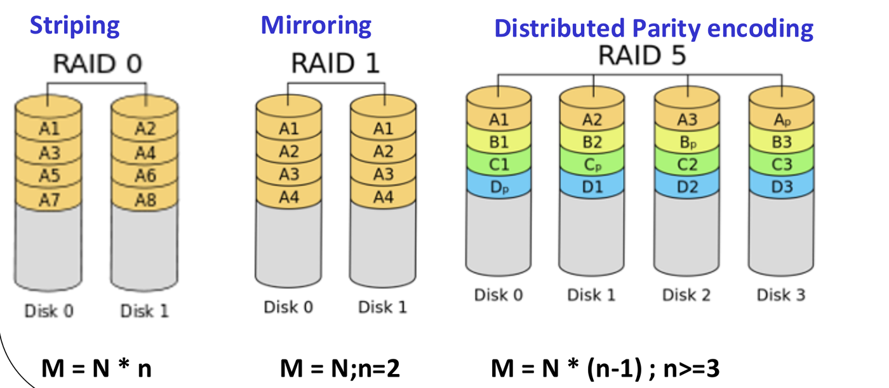
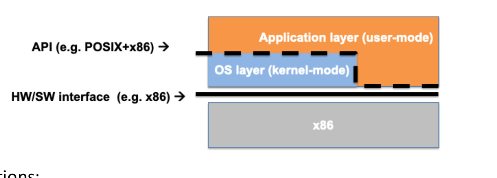
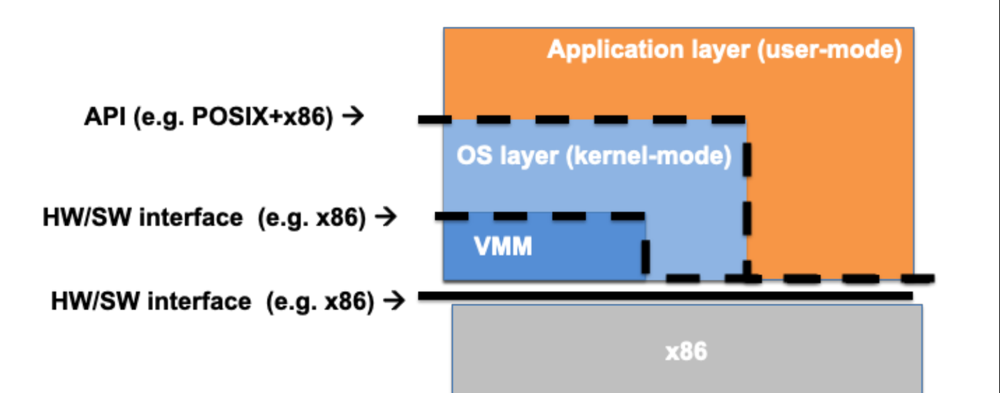

Virtualization applies a foundational principle of computer science: “Any problem in computer science can be solved by adding a level of indirection.”
In computer systems, virtualization inserts a software layer that presents an interface identical to the physical resource below it, while decoupling and hiding the physical implementation. This provides secure isolation, multi-tenancy, and flexible resource management.
1. The Three Mechanisms of Virtualization
Virtualization maps physical resources () to virtual resources () through three distinct techniques:

| Mechanism | Mapping Relationship | Description | Concrete Examples |
|---|---|---|---|
| Multiplexing | Slices a single physical resource into multiple independent virtual instances in time or space. | • vCPUs: A physical CPU core multiplexed among
multiple virtual CPU cores. • Virtual Memory: Slicing physical RAM into distinct address spaces. |
|
| Aggregation | Combines multiple physical resources into a single, unified virtual abstraction. | • RAID: Combining multiple physical hard drives
into a single logical volume. • Memory pooling across NUMA nodes. |
|
| Emulation | One Kind Another Kind | Software interprets and translates operations so that a resource presents an entirely different architecture or device type. | • Java Virtual Machine (JVM): x86/ARM hardware
emulates a stack-based bytecode processor. • RAM Disk: Volatile DRAM presents as a block storage disk. • Rosetta: Translates x86-64 binaries on ARM hardware. |
[!NOTE] CPU Overcommitment: In virtualized clouds, hypervisors allocate more total vCPUs than physical cores exist on the server (e.g. allocating 16 vCPUs across an 8-core host). This functions because virtual machines rarely utilize 100% of their CPU capacity simultaneously.
Storage Virtualization: The Three Core RAID Levels
RAID (Redundant Array of Independent Disks) aggregates physical disks (each of size ) into a single logical drive:

| RAID Level | Primary Technique | Usable Storage Capacity () | Fault Tolerance & Trade-offs |
|---|---|---|---|
| RAID 0 | Block Striping: Data blocks are distributed round-robin across all disks. | Zero Fault Tolerance: Maximizes read/write throughput through parallel access. If a single disk fails, all data is lost. | |
| RAID 1 | Mirroring: Every data block is duplicated identically onto a paired mirror disk. | Tolerates 1 disk failure. 50% capacity overhead; expensive. | |
| RAID 5 | Distributed Block-Level Parity: Data and parity blocks are striped cyclically across all disks. | Tolerates 1 disk failure. Lost data is reconstructed on-the-fly via XOR parity. Capacity overhead equals exactly one disk. |
2. Virtual Machines and Hypervisor Architectures
According to the classical Popek–Goldberg virtualization requirements (1974), a virtual machine is “an efficient, isolated duplicate of a real computer machine”.
The software layer managing virtual machines is the Virtual Machine Monitor (VMM) or Hypervisor:

Type 1 vs. Type 2 Hypervisors
| Feature | Type 1 Hypervisor (Bare-Metal) | Type 2 Hypervisor (Hosted) |
|---|---|---|
| Host Environment | The VMM is the operating system; runs directly on bare physical hardware. | The VMM runs as an application/module on top of a standard host OS. |
| Host Applications | No general-purpose applications execute on the host. | Standard host applications run concurrently alongside VMs. |
| Performance | Maximum performance and efficiency; minimal overhead. | Slight performance penalty due to host OS abstraction layers. |
| Target Deployment | Enterprise cloud data centers, servers (e.g. VMware ESXi, Xen, KVM on bare metal). | Desktop software, development environments (e.g. VirtualBox, VMware Workstation). |
Full Virtualization vs. Para-Virtualization
- Full Virtualization: The hypervisor provides a complete, faithful simulation of physical hardware. The guest operating system runs completely unmodified and is unaware that it is virtualized (e.g. VMware ESXi). Any operating system can run out-of-the-box.
- Para-Virtualization: The guest operating system is explicitly modified to communicate with the hypervisor via specialized APIs (hypercalls). Eliminates the complexity of virtualizing difficult CPU instructions, yielding higher performance (e.g. early Xen architectures).
3. Limited Direct Execution (LDE) at System Level
A virtual machine cannot afford to emulate every single user instruction in software, as doing so would cause massive 100x slowdowns.
Instead, hypervisors employ System-Level Limited Direct Execution:


- Direct Execution: The guest OS and its application programs execute their unprivileged machine instructions directly on the physical CPU at native hardware speed.
- Trap-and-Emulate: When the guest OS attempts to execute a sensitive/privileged instruction (modifying interrupt masks, altering page tables, or accessing I/O ports), the physical hardware CPU intercepts the instruction and triggers a trap to the Hypervisor (VMM).
- Hardware-Assisted Virtualization (Intel VT-x /
AMD-V): Modern CPUs introduce a hardware root /
non-root mode:
- The Hypervisor runs in Root Mode.
- The Guest OS and its applications run in Non-Root Mode.
- Sensitive instructions in non-root mode automatically trigger a VM Exit trap to the hypervisor, allowing the VMM to retain absolute control while delivering near-native performance.
Concept & Exam Checks: Virtualization Principles
- Identify the Virtualization Mechanism:
- A 4-core server running 16 vCPUs Multiplexing (1 physical core mapped to multiple virtual cores via time-slicing).
- A RAID 5 array of four 2 TB disks presenting as a single 6 TB volume Aggregation (multiple physical drives unified into one logical volume).
- A software JVM executing Java bytecode on an x86 processor Emulation (presenting an abstract stack-based architecture on register hardware).
- True/False: In a Type 2 hypervisor, normal user applications cannot run on the host system. False. Type 2 hypervisors execute on top of a standard host OS (like Linux or Windows), allowing conventional user applications to execute side-by-side with VMs.
- True/False: Para-virtualization executes an unmodified guest operating system. False. Para-virtualization explicitly requires modifying the guest OS kernel source code to replace sensitive instructions with hypercalls.